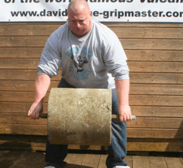
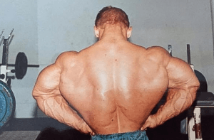
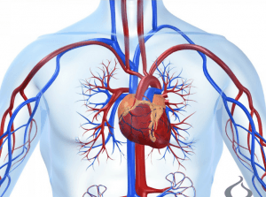

In the many articles I’ve posted on this website, I have discussed that there’s more to life than strength training—and I will never stop standing by that. Contrary to what some in the manosphere would have you believe, to train solely for strength is only giving yourself a half-advantage; after all, a man who can deadlift 1000 pounds isn’t all that useful if he can’t walk up a flight of stairs without dying of a heart attack.
With that being said, I wish to make something perfectly clear: while I don’t feel that strength training is the only thing you should do, I do feel that it is the most important thing you ought to be doing. To put quantities upon it, I would roughly estimate that 50% of the state of being “fit” is strength training, with the remaining 50% being a combination of cardiovascular and flexibility/dexterity training.
Simply put, if you’re not strength training, you are not training yourself to be as fit and strong as you can possibly be.
The benefits to your body from strength training and numerous and, if you’ll pardon the expression, diverse (finally, a form of diversity that isn’t inherently terrible!).
Strength
Obviously, the most visible benefit in strength training is that, simply, you will see increased strength and ability—which is to say, the ability to produce and resist external forces. It’s pretty self-explanatory: both the actual muscles fibers will increase in strength, and the central nervous system will become more accustomed to firing muscle units in synchronicity. Or to put it in even simpler terms—if you train with progressively heavier weights, you will become stronger

Hypertrophy
Another benefit for those who desire it is that of hypertrophy—gettin’ swole, in the layman’s. While I personally don’t care for bodybuilding, preferring instead to have functional strength and movement ability…
Finally, the handstand picture I couldn’t take a year ago due to my broken foot
I can in an ascetic sort of way understand the appeal of packing on as much mass as possible, and I do respect the effort and labor that goes into it.
While training for pure hypertrophy does not require quite as heavy loads of pure strength training, doing many repetitions of 75-85% of your max lift will develop your strength far beyond that of the average man, and will give you many of the not-as-visible benefits detailed below.

Increased Cardiovascular Endurance
Yes! That may surprise you, but increasing muscular strength can improve your cardiovascular endurance.
The way this works is that when you have trained your muscles (in particular the appendicular skeletal muscles—i.e., the limbs) to become stronger, you will increased blood circulation to them, and make the uptake of oxygen much more efficient. And with increased circulation and oxygen efficiency, you will by definition have more cardiovascular endurance than you would if you didn’t strength train.
Bear in mind of course that your average weightlifter is not going to be capable of running a marathon fresh out of the gym—you still need to train for the specific athletic adaptation you want (i.e., if you want to be able to run longer distances, you have to train running), but strength training will give you an advantage that the completely unconditioned person would not have.

Weight Loss
Obesity being the massive problem that it is in the wealthy world (and increasingly the developing world), this is obviously a goal that many are seeking to accomplish. As luck would have it, resistance training will help you substantially with that.
To put it very simplify, losing weight requires you to expend more calories than you lose. And when doing the fundamental full-body lifts, the sheer amount of muscles being exerted means you are expending a lot of calories. As if that wasn’t enough, weight lifting stimulates the production of androgens, most notably testosterone, which also stimulate the burning of fat
Bone Strength
Last but not least, resistance training will make your bones and joints stronger, thus enabling you to lift heavier and heavier weights and thus get all of the enumerated benefits above.
The Big Four
So now that you know the benefits of strength training (even if you don’t explicitly want to develop your strength and hypertrophy), the novice might be asking: which lifts should he do?
To get all of the benefits detailed above, you are going to have to do lifts that hit as many muscles as possible. And I think you know what those lifts are…
That’s right, the big four lifts! The squat, the deadlift, the bench press, and the overhead press. You already know the latter two, the former will have articles soon. Keep working at them with proper form, and all of those health benefits will be yours.
Read More: How To Start Training The Front Lever For Strength And Flexibility